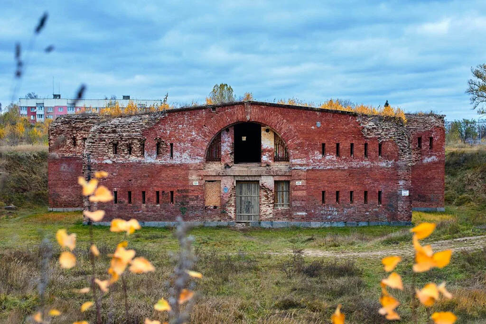
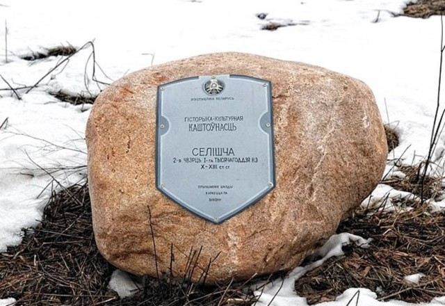
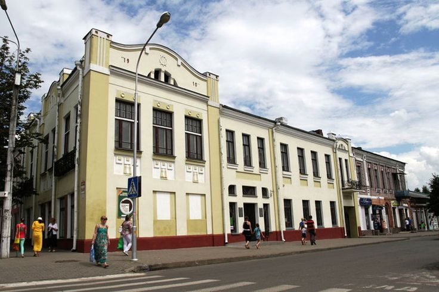
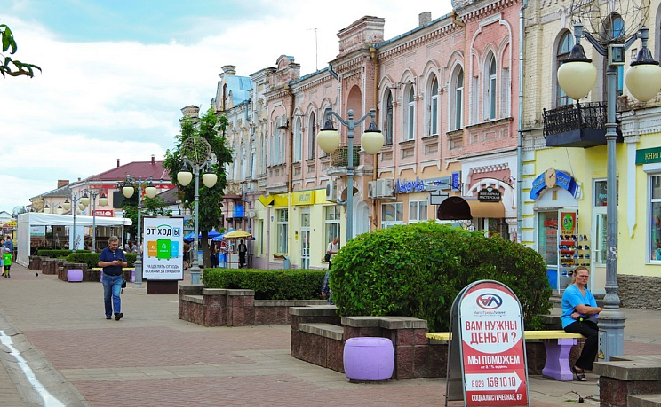
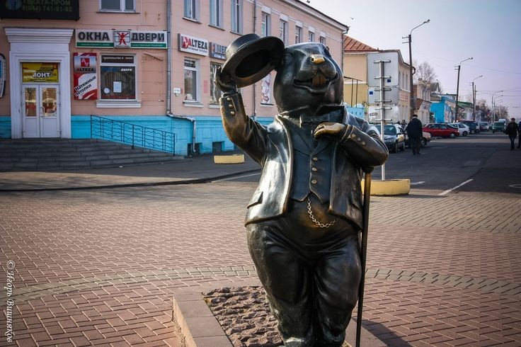
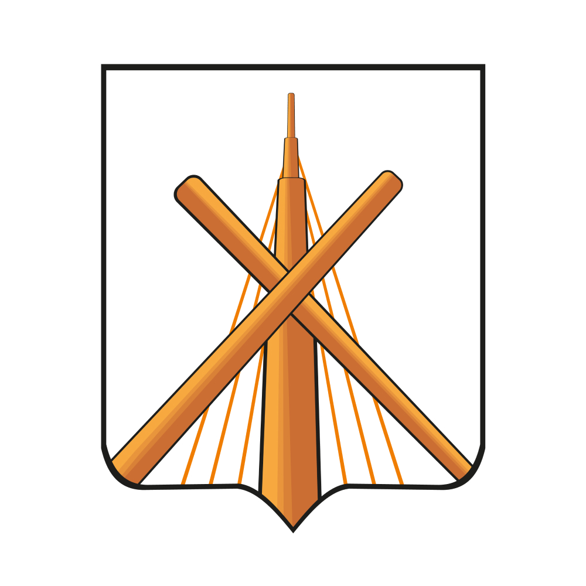
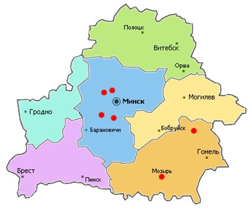

Бобруйск — один из старейших городов Беларуси, впервые упомянутый в 1387 году. Его стратегическое расположение на реке Березине делало город важным торговым и военным пунктом на протяжении веков. В XIX веке здесь была построена знаменитая Бобруйская крепость, которая сыграла важную роль в защите региона в Отечественной войне 1812 года.
Советский период принес промышленное развитие: завод «Белшина», текстильные предприятия, а также расширение городской инфраструктуры. Сегодня Бобруйск сочетает богатое историческое наследие с современными удобствами для жителей и туристов.
Крепость, построенная в 1810 году, впечатляет своими массивными бастионами и исторической атмосферой. Здесь можно прогуляться, увидеть восстановленные участки, узнать о битвах и декабристах, которые здесь содержались.
Археологический памятник, датируемый X-XIII веками. Это место раскрывает древнюю жизнь на территории Беларуси, с находками монет, украшений и предметов быта.
В музее представлены экспозиции по археологии, этнографии, истории города. Можно увидеть старинные документы, бытовые предметы и фотографии, рассказывающие о жизни бобруйчан разных эпох.
Главная пешеходная улица города. Здесь сочетаются исторические здания и современные кафе, магазины. Отличное место для прогулок и фотографий.
Символ города — памятник бобру на берегу Березины. Отличное место для семейных фото и прогулок в парке.
Герб Бобруйска символизирует историческую связь с дворянским родом Радзивиллов. Женская фигура с гербом «Трубы» отражает богатую историю города и его значение в регионе.
Бобруйск расположен в Могилевской области, на реке Березина, примерно в 150 км от Минска. Удобное транспортное сообщение делает город доступным для туристов и жителей других регионов.
Город активно развивается, проводятся культурные и спортивные мероприятия, фестивали и выставки. Для актуальной информации можно посетить официальный сайт города:
Бобруйск сочетает историческую атмосферу и современные промышленные предприятия, такие как завод «Белшина». Население на 2025 год — около 220 тысяч человек. Город привлекает туристов своими парками, историческими объектами и комфортной городской средой.